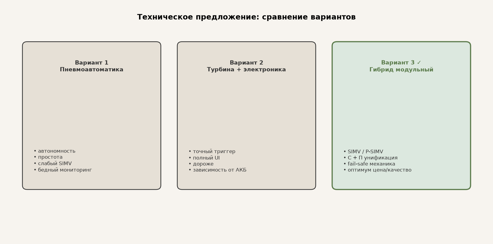
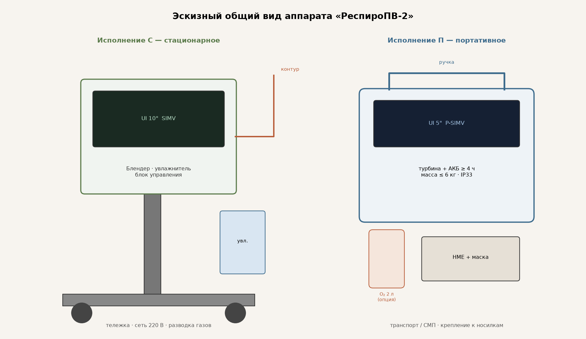
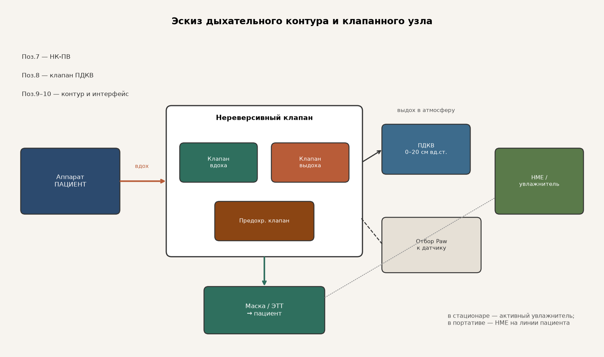

МАИ · Биомедицинская техника
Аппарат ИВЛ «РеспироПВ-2»
Принудительно-вспомогательные режимы SIMV / P-SIMV. Стационарный и портативный варианты.
Лабораторная работа: устройство аппаратуры искусственной вентиляции лёгких
Слайд 2
Цель работы
- Изучить строение респираторной системы и узлы аппаратов ИВЛ
- Спроектировать МА и П с принудительно-вспомогательными режимами
- Предусмотреть стационарное и переносное исполнения
- Подготовить ТЗ, ТП, эскиз, спецификацию и материалы защиты
Этап А
Цель МА и П
Главная функция
Замена (полная/частичная) функции внешнего дыхания с синхронизацией аппаратных циклов с попытками пациента (SIMV / P-SIMV).
Вторая главная функция
Мониторинг и регистрация параметров вентиляции и газообмена для безопасного ведения в ОРИТ и при транспортировке.
Этап А
Задачи аппарата
Измерить / зарегистрировать / отобразить
Paw, поток, Vt, VE, f, PEEP, FiO₂; кривые и журнал тревог; статус питания.
Нормализовать / заменить
Управление газообменом через Vt/Pinsp, f, PS, PEEP, FiO₂; замена работы дыхательных мышц.
Этап А
Биологические и технические звенья

Этап А
Критерии качества (фрагмент)
| Критерий | Параметр | Цель |
|---|---|---|
| Эффективность | Отклонение VE | ≤ ±10 % |
| Синхронизация | Задержка триггера | ≤ 100 мс |
| Безопасность | Предел Paw | ≤ 60–80 см вод. ст. |
| Портатив | АКБ / масса | ≥ 4 ч / ≤ 6 кг |
Этап Б
Структурная схема

Этап Б
Ключевые требования ТЗ
- Режимы: SIMV, P-SIMV, PSV + апноэ-вентиляция
- Vt 100–1000 мл; PEEP 0–20; FiO₂ 0,21–1,0
- Стационар: 220 В, разводка газов, увлажнитель, UI ≥ 10"
- Портатив: турбина + АКБ ≥ 4 ч, ≤ 6 кг, IP33, HME
- Безопасность по ГОСТ Р МЭК 60601-1 / 60601-2-12
Этап В
Техническое предложение

Принят вариант 3 — гибридный модульный с унификацией узлов С и П.
Этап Г
Эскизный общий вид

Этап Г
Дыхательный контур

Этап Г
Спецификация (ядро)
| Поз. | Узел | Примечание |
|---|---|---|
| 1 | Блок управления БУ-РПВ | Общий для С и П |
| 2 | Турбина ТГ-40 | Обязательна для П |
| 7–8 | НК + ПДКВ | Механический fail-safe |
| 11 / 12 | Увлажнитель / HME | С / П соответственно |
| 13 | АКБ 14,8 В | ≥ 4 ч автономности |
Выводы
Итоги проекта
- Сформулированы цель, задачи и критерии качества МА и П
- Построены связи биологических и технических звеньев
- Разработаны ТЗ и ТП; выбран гибридный вариант
- Подготовлены эскизы и спецификация «РеспироПВ-2»
Спасибо за внимание. Готов ответить на вопросы.